Jacquelin Charbonnel
{kind=link}
Coopération internationale
Université de Labé — Labé, Guinée, 09/2013 |
Formation des enseignants à la virtualisation sous Linux |
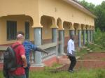 |
IFTIC-SUP — Yaoundé, 03/2012 |
Formation des étudiants à l’utilisation et à l’administration du système Linux |
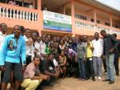 |
Institut Africain d’Informatique — Yaoundé, 11/2010 |
Formation des étudiants à l’utilisation et à l’administration du système Linux |
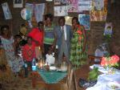 |
Institut Africain d’Informatique — Yaoundé, 02/2010 |
Formation des étudiants à la programmation en C |
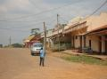 |
Institut Africain d’Informatique — Libreville, 12/2009 |
Collaboration avec l’équipe pédagogique |
|
Institut Africain d’Informatique — Yaoundé, 12/2009 |
Formation des étudiants au système Linux et à la programmation en C |
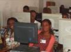 |
ESIBA — Lomé, 02/2000 |
Collaboration avec l’équipe pédagogique |
|
Funredes — Saint Domingue, 08/1999 |
Migration du serveur Linux de l’ONG |
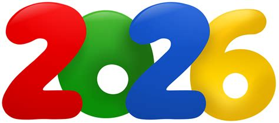 |
Ce type de missions ponctuelles et bénévoles, dans un environnement open source, en université, école d’ingénieurs ou institut de formation supérieure, m’intéresse. |
⯌ Vous aussi ? Contactez-moi, et on organise ça ! |
Mes rédactions
-
« Le langage C↗, c’est pas facile. Qui peut m’expliquer ? »
-
Tous connectés matin, midi et soir. Mais comment ça marche un réseau↗ ? »
-
« Les expressions régulières↗, c’est rigolo parce qu’on n’y comprends rien ! »
⯌ Le savoir grandit quand il circule.👩🎓 |
||
Mon activité d’ingénieur de recherche au CNRS
2. Exposés
| 2025 | |||
|---|---|---|---|
Laboratoire XLIM — Limoges, mai |
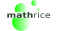 |
| 2024 | |||
|---|---|---|---|
IMAG — Grenoble, mars |
| 2023 | |||
|---|---|---|---|
Institut Henri Poincaré — Paris, novembre |
Les infrastructures informatiques dans les labos de math - Enquête |
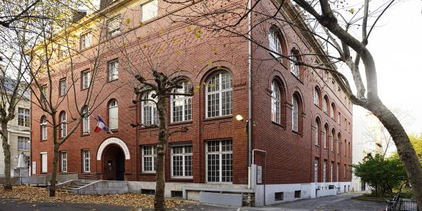 |
|
Institut de Mathématiques de Bordeaux, mars |
| 2022 | |||
|---|---|---|---|
Université d’Angers, juin |
| 2021 | |||
|---|---|---|---|
IMJ-PRG — Paris, octobre |
| 2019 | |||
|---|---|---|---|
IMATH — Toulon, octobre |
| 2015 | |||
|---|---|---|---|
LAREMA — Angers, 5 mai |
Comité INSMI |
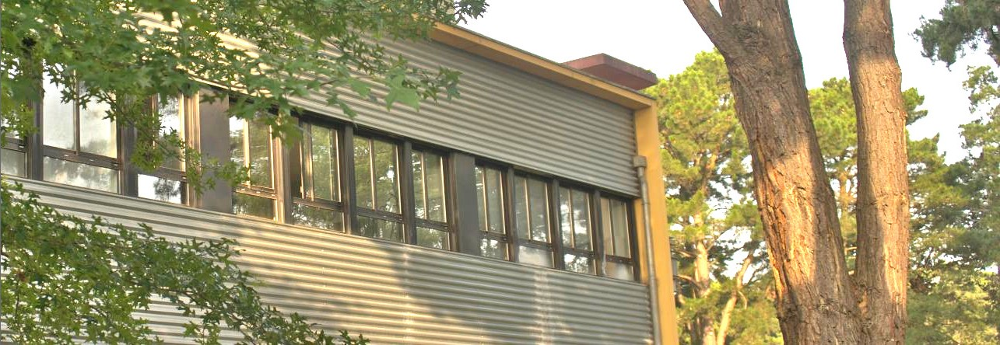 |
|
UPMC — Paris, mars |
Visite des laboratoires de maths de Paris Centre |
| 2014 | |||
|---|---|---|---|
CNRS délégation Rennes — octobre |
Journées CARGO |
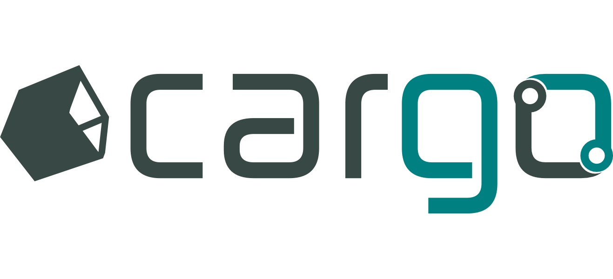 |
|
Lac de Maine — Angers, septembre |
ANF Mathrice |
| 2013 | |||
|---|---|---|---|
Montpellier, décembre |
Mathrice : une communauté, un réseau, une équipe pour les mathématiques |
JRES 2013 |
|
CIRM — Marseille, mai |
Rencontres du Réseau National des Bibiothèques de Math |
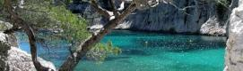 |
|
Paris, avril |
Journées des Directeurs d’Unités de l’INSMI, CNRS |
||
CNRS — Paris, janvier |
Institut des Sciences de l’Information et de leurs interactions (INS2I) |
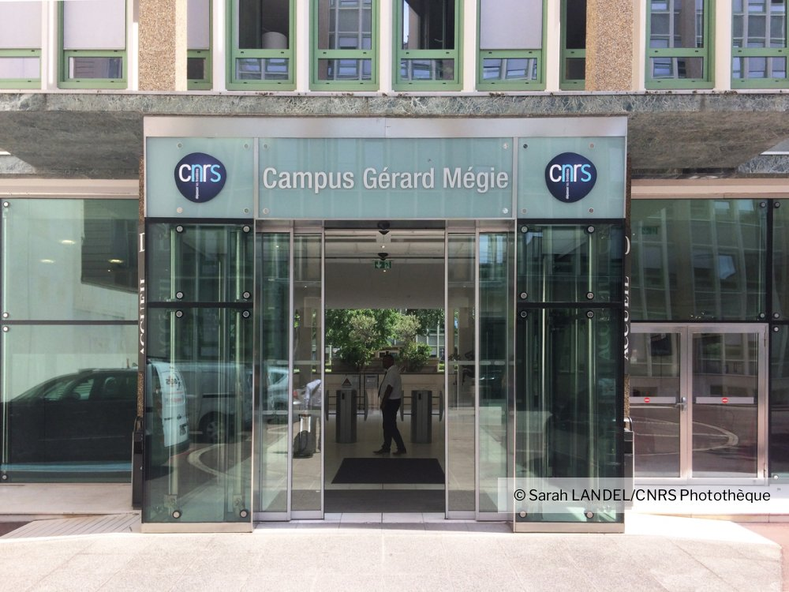 |
| 2012 | |||
|---|---|---|---|
Institut Denis Poisson — Orléans, octobre |
Journées Mathrice |
||
ENSSIB — Lyon, juin |
Architecture de serveurs virtualisés pour la communauté mathématique |
||
Lac de Maine — Angers, mai |
Semaine Développement logiciel pour l’administration système et réseau↗, Mathrice |
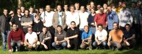 |
|
Lac de Maine — Angers, mai |
Semaine Développement logiciel pour l’administration système et réseau↗, Mathrice |
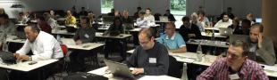 |
| 2011 | |||
|---|---|---|---|
Institut Camille Jordan — Lyon, octobre |
Projet de renouvellement du GDS (Journées Mathrice) |
||
Institut Camille Jordan — Lyon, octobre |
Journées Mathrice |
||
Institut Camille Jordan — Lyon, octobre |
Journées Mathrice |
||
Université de Strasbourg — juin |
JoSy Virtualisation |
||
Institut de Mathématiques de Bourgogneb — Dijon, mars |
Présentation aux journées Mathrice de printemps |
||
CNRS délégation Paris Centre — janvier |
Formation permanente du CNRS sur la virtualisation |
| 2010 | |||
|---|---|---|---|
ESPCI — Paris, novembre |
JoSy Plume "Logiciels libres de base utiles à tout ASR" |
||
Université Paris Descartes, février |
| 2009 | |||
|---|---|---|---|
Nantes, décembre |
|||
CIRM — Marseille, novembre |
ANF Mathrice au CIRM |
||
ENSPS — Strasbourg, octobre |
|||
LAREMA — Angers, juillet |
TP proposé à la DDN de l’université |
||
Faculté des sciences — Angers, mars |
Journées mathrice |
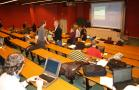 |
|
LAREMA — Angers, mars |
TP journées Mathrice |
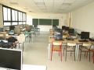 |
|
LAREMA — Angers, mars |
Présentée aux journées Mathrice d’Angers |
| 2008 | ||
|---|---|---|
La grande motte, septembre |
Semaine UREC "Aide à la détection des faiblesses d’un site web"↗ |
|
Septembre |
Mesures pour trouver la bonne config KVM |
|
Août |
Mesures de performance sur VMWare et KVM |
| 2004 | ||
|---|---|---|
Hourtin, juin |
Ouvrages
Langage C++ : le standard ANSI/ISO expliqué — Jacquelin Charbonnel — Dunod 1999 |
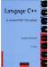 |
Langage C++ : les spécifications du standard ANSI/ISO expliquées — Jacquelin Charbonnel — InterEdition 1997 |
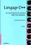 |
Langage C++ : la proposition de standard ANSI/ISO expliquée — Jacquelin Charbonnel — Masson 1996 |
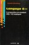 |
Langage C : les finesses d’un langage redoutable — Jacquelin Charbonnel — Armand Colin 1992 |
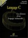 |